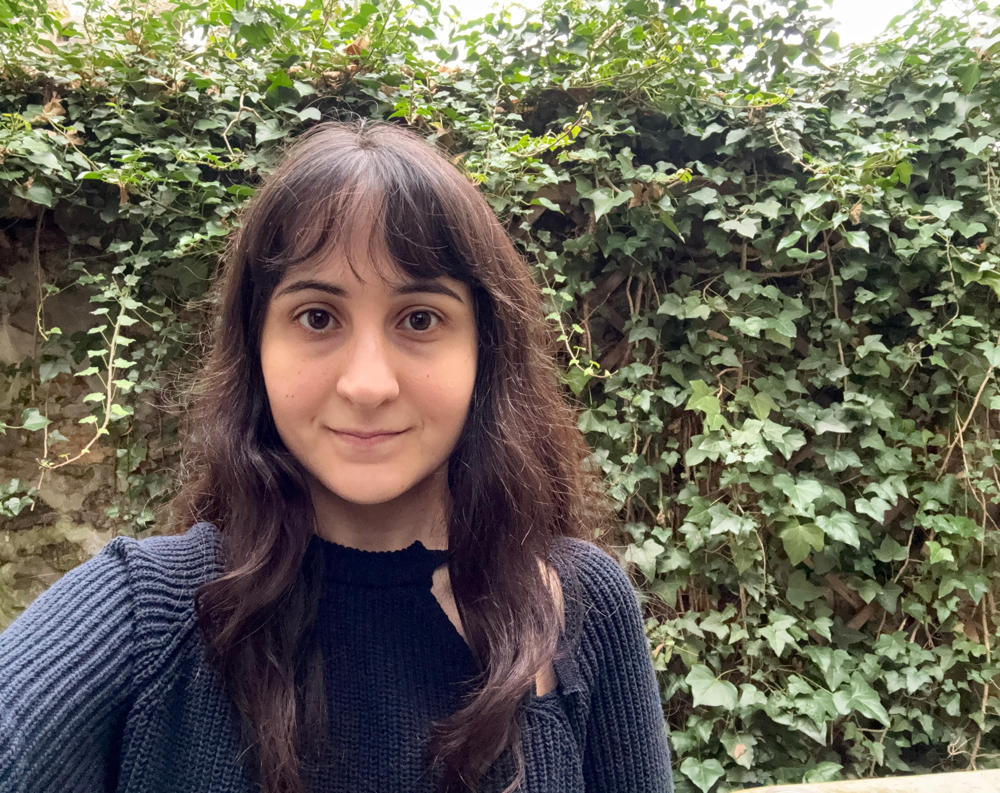
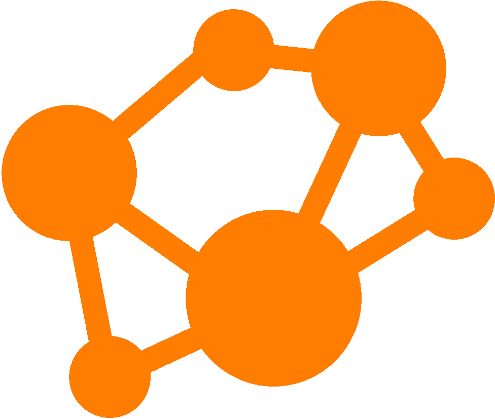

I am a PhD candidate at INRIA Saclay & École polytechnique. My research focuses on coding theory and related topics in combinatorics.

I am an Encode PhD Candidate. I am a
villager!
I am a
villager!
I am on the organization committee of
Arithmetic Winter School.
Research Interests
coding theory, additive combinatorics, combinatorics on words
Inria Saclay & École polytechnique
2023 - current
PhD student under the supervision of Alain Couvreur and Gary McGuire.
Koç University
2021 - 2023
Mathematics, MSc — supervised by Asgar Jamneshan.
2016 - 2021
Mathematics, BSc
Preprints
-
Box Progressions, Abelian Power-Free Morphisms and A Sieve Technique for the Template Method.
with Sadık Eyidoğan and Haydar Göral.
to appear in Mathematics of Computation.
Codes
Publications
-
On the structure of the Schur squares of Twisted Generalized Reed-Solomon codes and applications to cryptanalysis.
with Alain Couvreur, Rakhi Pratihar, and Ilaria Zappatore.
Post-Quantum Cryptography. PQCrypto 2025. Lecture Notes in Computer Science, vol 15577.
Sage implementation of the attack
- On the structure of the Schur squares of Twisted Generalized Reed-Solomon codes and applications to cryptanalysis, Journées Codage et Cryptographie (C2), April 2, 2025; PQCrypto, April 8, 2025; PICS seminar, 14 October 2025. slides
- Box Progressions and Abelian Power Free Words, Journées Arithmétiques, June 2025 slides
- Vosper Theorem From Additive Combinatorics, IZTECH departmental seminars, May 22, 2024
- Classification of Small Square Spaces, Suusan CIMPA summer school, 2022
Nesin Mathematics Village
2024–2026
- Topics in Combinatorics with Haydar Göral, scheduled for 2026
- Algebraic Function Fields with Haydar Göral, 2026
- The Riemann-Roch Theorem for Function Fields with Haydar Göral, 2026
- Topics in Additive Combinatorics with Haydar Göral, 2024
Koç University — teaching assistant
2018–2023
- Graduate Real Analysis-2 (2023)
- Functional Analysis (2022)
- Graduate Real Analysis (2022)
- Complex Analysis ×2 (2022–2023)
- Real Analysis ×2 (2021–2022)
- Ordinary Differential Equations ×2 (2021–2022)
- Linear Algebra (2019)
- Multivariable Calculus (2018)
- Calculus (2018)